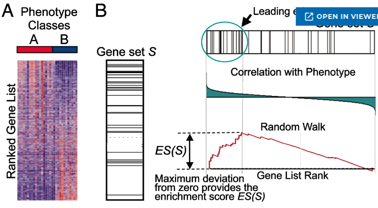
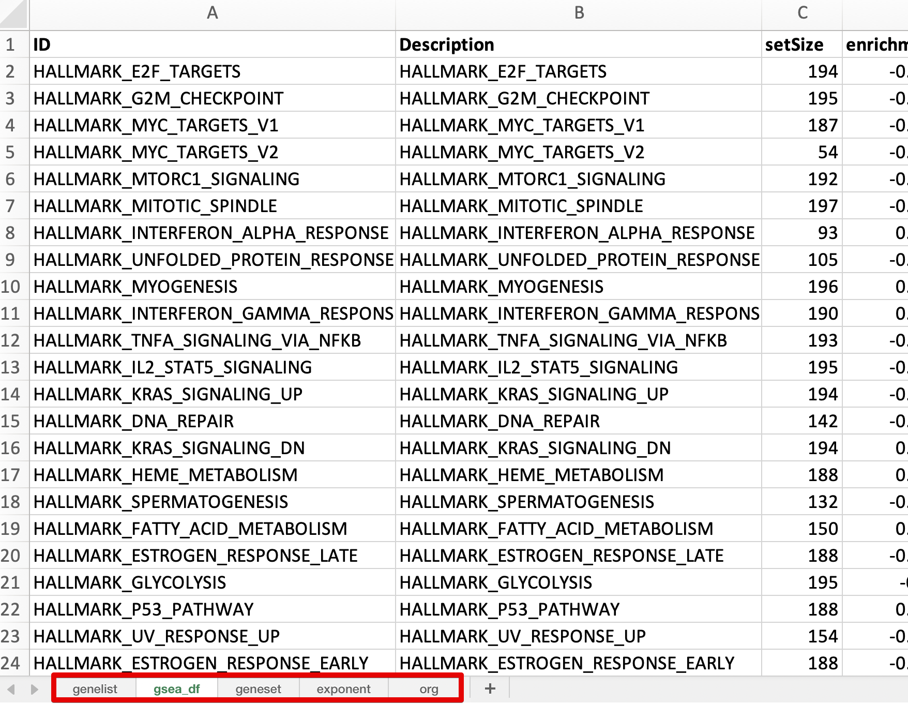

9 FCS-GSEA analysis
9.1 Introduction to FCS methods
The ORA method is easy to use, but it may lose useful information when the differences between genes are small. For example, a gene may play an essential role in a pathway but still be filtered out by the fold-change cutoff if its expression change is small.
Unlike ORA, FCS tools do not use a fixed threshold to select differentially expressed genes. Instead, they assign a differential expression score to each detected gene and then evaluate whether the scores in each gene set are more positive or negative than expected by chance.
According to the article “Ten Years of Pathway Analysis: Current Approaches and Outstanding Challenges”:
FCS approaches include GSEA, GlobalTest, sigPathway, SAFE, GSA, PADOG, PCOT2, FunCluster, SAM-GS, and Category, among others.
Next, we will walk through the popular Gene Set Enrichment Analysis (GSEA) method, which uses permutation-based testing to determine whether a gene set is significantly associated with higher or lower scores.
9.2 Introduction to GSEA
To perform GSEA, you need an ordered, pre-ranked gene list, such as genes ranked by decreasing logFC values.
GSEA generally includes three steps:
Calculate the enrichment score (ES). The ES indicates how strongly the genes in a gene set are overrepresented at either the top or the bottom of the ranked list. GSEA starts at the top of the list and calculates a running sum. The score increases when a gene belongs to the target gene set and decreases when it does not.
Estimate the statistical significance of the ES. This is done with a permutation test, which generates a null distribution for the ES.
Adjust for multiple testing when many gene sets are analyzed at the same time. The enrichment score of each gene set is normalized, and a false discovery rate is calculated.

Figure 9.1: GSEA overview
For a more detailed explanation of the GSEA procedure, please visit https://www.pathwaycommons.org/guide/primers/data_analysis/gsea or https://github.com/crazyhottommy/RNA-seq-analysis/blob/master/GSEA_explained.md.
9.3 Basic usage
The main arguments are:
-
id: a pre-ranked gene list in decreasing order, such as a list ranked by logFC or correlation. Entrez IDs, Ensembl IDs, and gene symbols are accepted. -
geneset: a two-column data frame containing term IDs and gene IDs. We recommend using geneset to prepare gene sets. -
p_cutoff: a numeric cutoff for both the p-value and adjusted p-value. The default is 0.05. -
q_cutoff: a numeric cutoff for the q-value. The default is 0.15.
9.3.1 Step 1: Prepare a pre-ranked gene list
## 948 1638 158471 10610 6947 100133941
## 5.780170 5.633027 4.683610 3.875120 3.357670 3.3225339.3.2 Step 2: Prepare a gene set
gs <- geneset::getGO(org = "human",ont = "mf")9.3.3 Step 3: Run GSEA
gse <- genGSEA(genelist = geneList, geneset = gs)Now, let’s take a look at the result.
The returned object is a list that mainly contains the analysis results (gsea_df), the input gene list (genelist), and the input gene set (geneset).
class(gse)## [1] "list"
names(gse)## [1] "gsea_df" "genelist" "geneset" "exponent" "org"
head(gse$genelist)## ID logfc
## CD36 CD36 5.780170
## DCT DCT 5.633027
## PRUNE2 PRUNE2 4.683610
## ST6GALNAC2 ST6GALNAC2 3.875120
## TCN1 TCN1 3.357670
## CD24 CD24 3.322533
head(gse$geneset)## mf gene
## 1 GO:0000009 PIGV
## 2 GO:0000009 ALG12
## 3 GO:0000009 ALG2
## 4 GO:0000014 ENDOG
## 5 GO:0000014 ERCC1
## 6 GO:0000014 ERCC4
head(gse$gsea_df, 5)## Hs_MF_ID Description setSize
## GO:0140097 GO:0140097 catalytic activity, acting on DNA 226
## GO:0008094 GO:0008094 ATP-dependent activity, acting on DNA 111
## GO:0016887 GO:0016887 ATP hydrolysis activity 392
## GO:0140098 GO:0140098 catalytic activity, acting on RNA 361
## GO:0004386 GO:0004386 helicase activity 146
## enrichmentScore NES pvalue p.adjust qvalue
## GO:0140097 -0.5827930 -2.454673 9.523154e-17 1.164682e-13 9.693569e-14
## GO:0008094 -0.6686545 -2.586379 2.834758e-14 1.733455e-11 1.442743e-11
## GO:0016887 -0.4652918 -2.054363 4.900594e-14 1.997809e-11 1.662763e-11
## GO:0140098 -0.4483973 -1.971987 1.166004e-11 3.565056e-09 2.967173e-09
## GO:0004386 -0.5827909 -2.327719 1.775608e-11 4.343138e-09 3.614764e-09
## rank leading_edge
## GO:0140097 1723 tags=31%, list=9%, signal=28%
## GO:0008094 1172 tags=34%, list=6%, signal=32%
## GO:0016887 2528 tags=31%, list=14%, signal=28%
## GO:0140098 2872 tags=36%, list=15%, signal=31%
## GO:0004386 1295 tags=31%, list=7%, signal=29%
## geneID
## GO:0140097 4292/5981/6996/126549/92667/3159/3980/348654/1786/1105/10856/1660/7150/63922/5889/10728/57697/7156/27301/7517/10146/5932/56652/3978/5810/5424/54107/8607/5422/2956/7374/11144/7153/5985/4436/8458/2237/64782/5426/64858/5982/1763/146956/5984/10714/1736/5111/55345/4172/84515/8091/83990/4171/4176/5983/10721/79075/55247/4174/4173/79915/4175/3070/8438/54821/5427/641/5888/7516/9156
## GO:0008094 1105/10856/1660/63922/5889/57697/7517/10146/56652/8607/2956/11144/7153/5985/4436/8458/5982/1763/5984/55345/4172/84515/83990/4171/4176/5983/10721/79075/4174/4173/79915/4175/3070/8438/54821/641/5888/7516
## GO:0016887 22880/3327/80119/10131/730211/23347/55661/23517/3313/22907/55636/3799/64222/1653/6832/5704/9126/79572/55308/55794/391634/23400/154664/3312/81570/5700/338322/5706/4643/57062/4292/5981/23/6782/3320/10694/23195/79039/547/8243/3329/5702/9429/3324/55210/9879/6891/6950/10061/57696/10575/1105/10856/3309/7203/64794/57647/1660/908/9775/63922/54606/57697/9704/56919/1662/3800/23046/10146/10576/10212/10051/56652/10112/10592/3323/51182/490/8607/8886/1665/11218/22948/11144/5985/81930/3835/4436/80179/6059/9188/166378/11004/9928/5982/1763/9585/5984/3833/63979/146909/990/4172/9493/84515/83990/56992/4171/4176/5983/10721/4174/4173/79915/4175/9319/91607/8438/29028/4998/54821/641/5888
## GO:0140098 138428/122665/5435/60625/5976/57472/55278/10623/3396/167227/7015/91801/8731/8846/80745/80119/10557/55695/10556/79828/60528/91893/29883/55661/339175/23517/22907/80746/22894/171568/51163/11128/1653/6832/57505/55308/55794/5437/5511/79066/221078/11102/115708/85463/8732/51010/114049/112479/5438/54512/201626/9836/25885/23016/124454/57062/55798/96764/91298/9533/117246/10799/29063/2107/10940/79039/79731/27292/54913/51651/9879/55687/55621/57696/56339/29960/55157/56931/246243/54931/64794/57647/1660/9775/23210/54606/2193/54148/57697/81875/9704/27161/56919/1662/24140/79691/10146/54888/10621/10212/114034/28960/92935/64216/10171/4839/4234/56915/10436/90459/25819/80324/10622/8886/1665/51728/10535/11218/10056/84172/87178/10248/54517/23404/2237/5393/9188/51106/5557/83990/9156
## GO:0004386 9879/57696/1105/10856/64794/57647/1660/9775/63922/54606/57697/9704/56919/1662/10146/10212/56652/8607/8886/1665/11218/5985/8458/9188/5982/1763/5984/55345/4172/84515/83990/4171/4176/5983/10721/79075/4174/4173/4175/3070/91607/8438/54821/641/5888
## geneID_symbol
## GO:0140097 MLH1/RFC1/TDG/ANKLE1/MGME1/HMGA1/LIG3/GEN1/DNMT1/CHD1/RUVBL2/DHX9/TOP1/CHTF18/RAD51C/PTGES3/FANCM/TOP3A/APEX2/XRCC3/G3BP1/RBBP8/TWNK/LIG1/RAD1/POLD1/POLE3/RUVBL1/POLA1/MSH6/UNG/DMC1/TOP2A/RFC5/MSH2/TTF2/FEN1/AEN/POLE/DCLRE1B/RFC2/DNA2/EME1/RFC4/POLD3/DKC1/PCNA/ZGRF1/MCM3/MCM8/HMGA2/BRIP1/MCM2/MCM7/RFC3/POLQ/DSCC1/NEIL3/MCM5/MCM4/ATAD5/MCM6/HELLS/RAD54L/ERCC6L/POLE2/BLM/RAD51/XRCC2/EXO1
## GO:0008094 CHD1/RUVBL2/DHX9/CHTF18/RAD51C/FANCM/XRCC3/G3BP1/TWNK/RUVBL1/MSH6/DMC1/TOP2A/RFC5/MSH2/TTF2/RFC2/DNA2/RFC4/ZGRF1/MCM3/MCM8/BRIP1/MCM2/MCM7/RFC3/POLQ/DSCC1/MCM5/MCM4/ATAD5/MCM6/HELLS/RAD54L/ERCC6L/BLM/RAD51/XRCC2
## GO:0016887 MORC2/HSP90AB3P/PIF1/TRAP1/HSP90AA5P/SMCHD1/DDX27/MTREX/HSPA9/DHX30/CHD7/KIF5B/TOR3A/DDX1/SUPV3L1/PSMC4/SMC3/ATP13A3/DDX19A/DDX28/HSP90AB2P/ATP13A2/ABCA13/HSPA8/CLPB/PSMC1/NLRP10/PSMC6/MYO1E/DDX24/MLH1/RFC1/ABCF1/HSPA13/HSP90AA1/CCT8/MDN1/DDX54/KIF1A/SMC1A/HSPD1/PSMC3/ABCG2/HSP90AA2P/ATAD3A/DDX46/TAP2/TCP1/ABCF2/DDX55/CCT4/CHD1/RUVBL2/HSPA5/CCT3/DDX31/DHX37/DHX9/CCT6A/EIF4A3/CHTF18/DDX56/FANCM/DHX34/DHX33/DDX10/KIF5C/KIF21B/G3BP1/CCT2/DDX39A/SMC4/TWNK/KIF20A/SMC2/HSP90AA4P/HSPA14/ATP2B1/RUVBL1/DDX18/DHX15/DDX20/CCT5/DMC1/RFC5/KIF18A/KIF22/MSH2/MYO19/ABCE1/DDX21/AFG2A/KIF2C/KIF14/RFC2/DNA2/KIF20B/RFC4/KIFC1/FIGNL1/KIF18B/CDC6/MCM3/KIF23/MCM8/BRIP1/KIF15/MCM2/MCM7/RFC3/POLQ/MCM5/MCM4/ATAD5/MCM6/TRIP13/SLFN11/RAD54L/ATAD2/ORC1/ERCC6L/BLM/RAD51
## GO:0140098 PTRH1/RNASE8/POLR2F/DHX35/UPF1/CNOT6/QRSL1/POLR3C/MRPL58/DCP2/TERT/ALKBH8/RNMT/ALKBH1/THUMPD2/PIF1/RPP38/NSUN5/RPP30/METTL8/ELAC2/FDXACB1/CNOT7/DDX27/METTL2A/MTREX/DHX30/TSEN2/DIS3/POLR3H/DBR1/POLR3A/DDX1/SUPV3L1/AARS2/DDX19A/DDX28/POLR2H/PPP1R8/METTL16/NSUN6/RPP14/TRMT61A/ZC3H12C/RNGTT/EXOSC3/BUD23/ERI2/POLR2I/EXOSC4/PDE12/LCMT2/POLR1A/EXOSC7/EARS2/DDX24/METTL2B/TGS1/RLIG1/POLR1C/FTSJ3/RPP40/ZCCHC4/ETF1/POP1/DDX54/NARS2/DIMT1/RPP25/PTRH2/DDX46/TRMU/TRMT1/DDX55/METTL3/MRM2/DARS2/DUS3L/RNASEH1/TRMT10C/DDX31/DHX37/DHX9/EIF4A3/JMJD6/DDX56/FARSA/MRPL39/FANCM/ISG20L2/DHX34/AGO2/DHX33/DDX10/FTSJ1/QTRT2/G3BP1/NSUN2/POLR3F/DDX39A/TOE1/DCPS/MARS2/TFB2M/RCL1/NOP2/METTL1/EXOSC5/EMG1/ERI1/NOCT/PUS1/POLR3G/DDX18/DHX15/POLR3K/RNASEH2A/DDX20/FARSB/POLR1B/PNPT1/POP7/PUS7/EXOSC2/FEN1/EXOSC9/DDX21/TFB1M/PRIM1/BRIP1/EXO1
## GO:0004386 DDX46/DDX55/CHD1/RUVBL2/DDX31/DHX37/DHX9/EIF4A3/CHTF18/DDX56/FANCM/DHX34/DHX33/DDX10/G3BP1/DDX39A/TWNK/RUVBL1/DDX18/DHX15/DDX20/RFC5/TTF2/DDX21/RFC2/DNA2/RFC4/ZGRF1/MCM3/MCM8/BRIP1/MCM2/MCM7/RFC3/POLQ/DSCC1/MCM5/MCM4/MCM6/HELLS/SLFN11/RAD54L/ERCC6L/BLM/RAD51
## Count
## GO:0140097 70
## GO:0008094 38
## GO:0016887 123
## GO:0140098 131
## GO:0004386 45About the
gsea_dfresult
Description: the name of the gene set.setSize: the number of genes in the gene set that have gene-level statistic values in the input list. For example, a pathway gene set may contain 58 genes, such asHALLMARK_MYC_TARGETS_V2, but only 54 of them may be present in the input gene list. In this case, the result will showsetSize = 54.enrichmentScore: also called ES, as in the Broad GSEA implementation. It reflects the degree to which a gene set is overrepresented at the top or bottom of a ranked gene list.NES: the normalized enrichment score and the primary statistic used to examine gene set enrichment results. By normalizing the enrichment score, GSEA accounts for differences in gene set size and correlations between gene sets and the expression dataset. Therefore, NES values can be used to compare results across gene sets. A positive NES indicates that the genes in set S are mainly found near the top of the ranked list, which usually corresponds to genes withlogFC > 0or upregulated genes.rank: the position in the ranked list where the maximum enrichment score occurs. If a gene set reaches its maximum enrichment score near the top or bottom of the ranked list, the rank at the maximum will be either very small or very large.-
leading_edge: contains three statistics:-
tags: the percentage of gene hits that appear before the peak for a positive ES or after the peak for a negative ES. It indicates the proportion of genes that contribute to the enrichment score. -
list: the percentage of genes in the ranked list that appear before the peak for a positive ES or after the peak for a negative ES. It gives an idea of where the enrichment score is reached in the list. -
signal: the strength of the enrichment signal. If the entire gene set appears within the first N positions of the list, the signal is strongest and may reach 100%. If the genes are spread throughout the list, the signal decreases toward 0%.
-
geneIDandgeneID_symbol: if the input contains a mixture of official gene symbols and aliases, a newgeneID_symbolcolumn will be added. If all input symbols are official gene symbols, only thegeneIDcolumn will be returned.
9.4 Advanced usage
9.4.1 Additional arguments
Please refer to the ORA section.
9.4.2 Simplify GO GSEA results
Please refer to the ORA section.
9.5 Export GSEA results
genekitr provides an easy way to export analysis results for further editing and sharing.
Multiple data frames are saved as separate sheets in a single Excel file, and the column names are automatically formatted in bold.
genekitr::expoSheet(data_list = gse,
data_name = names(gse),
filename = "gsea_result.xlsx",
dir = "./")
Figure 9.2: Export results